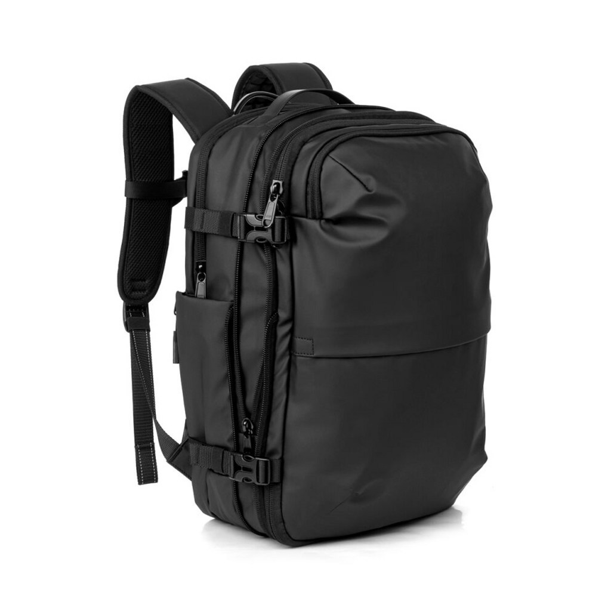
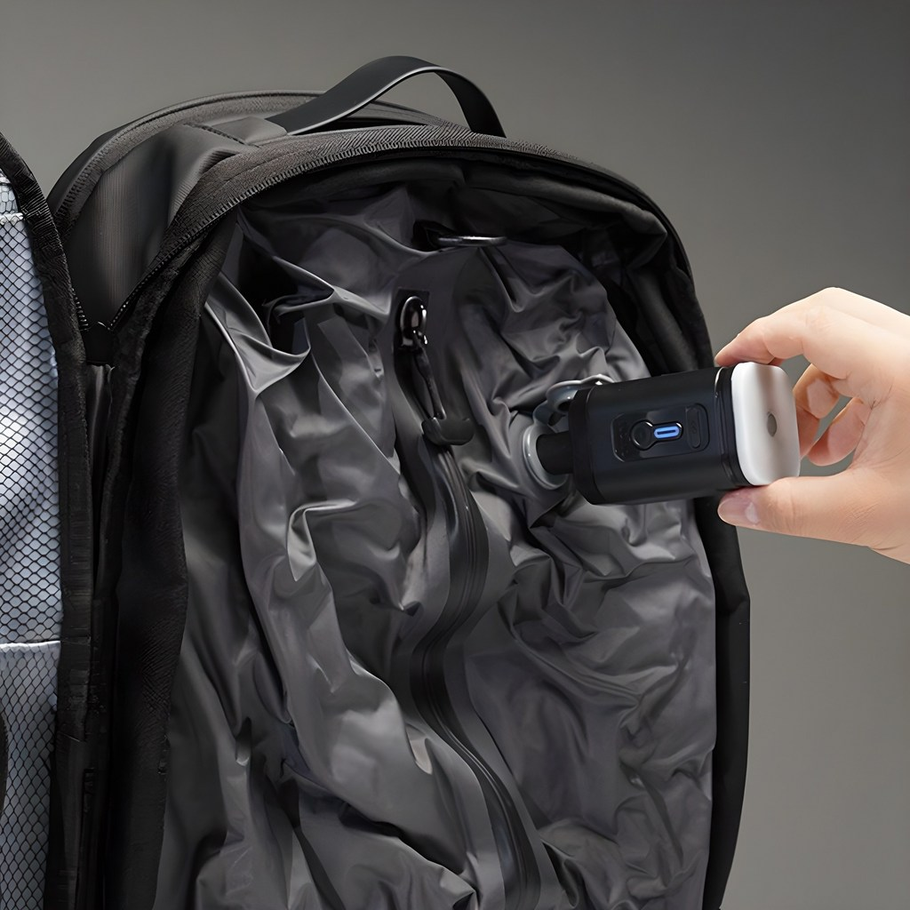
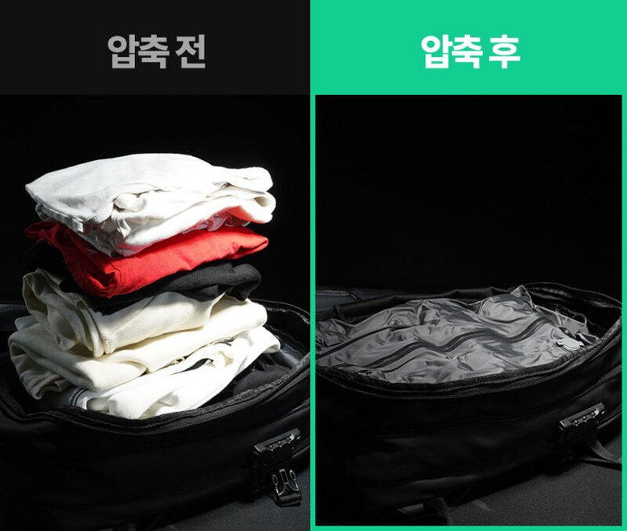
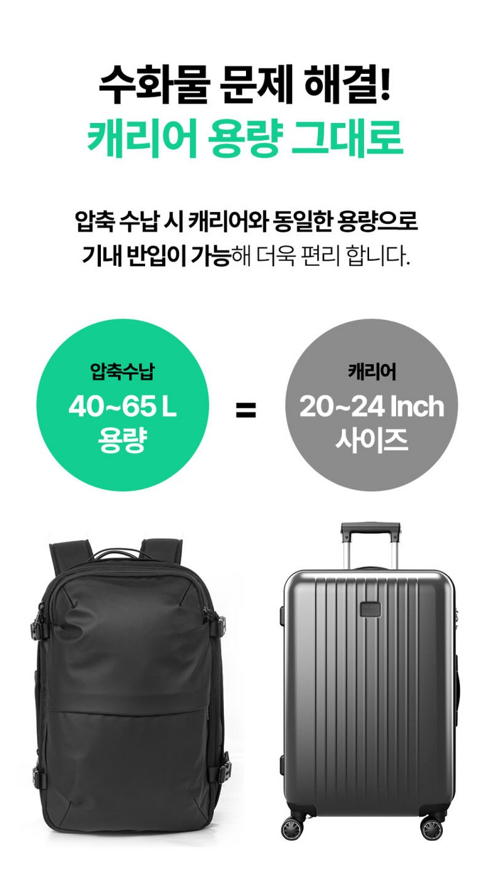
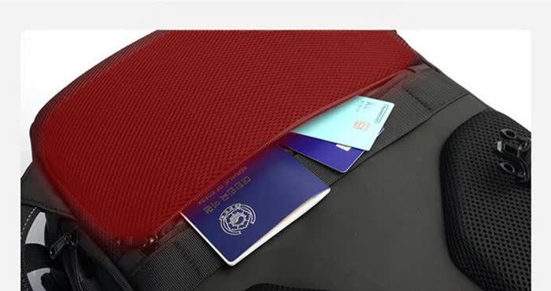
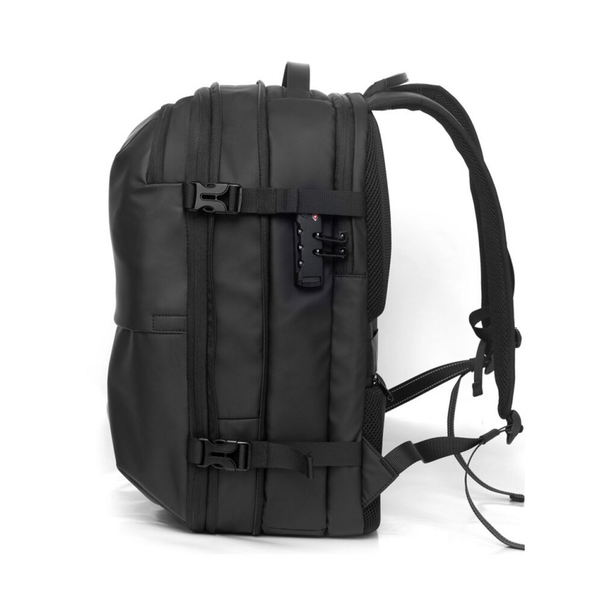

<meta charset="utf-8">
<title>캐리어 대신 백팩 하나, 압축으로 65L — 나의 투자 그리고 행복한 여행</title>
<meta name="description" content="CANZ 에어백팩 리뷰 — 압축 수납 40~65L, 17.3인치 노트북, RFID 차단. 129,000원(13% 할인).">
<meta name="viewport" content="width=device-width, initial-scale=1">
<link rel="canonical" href="https://danielmoon82.github.io/moon/posts/canz-air-backpack.html">
<link rel="preconnect" href="https://fonts.googleapis.com">
<link rel="preconnect" href="https://fonts.gstatic.com" crossorigin>
<link rel="stylesheet" href="https://fonts.googleapis.com/css2?family=Hahmlet:wght@400;600;800&family=IBM+Plex+Mono:wght@400;500&family=IBM+Plex+Sans+KR:wght@300;400;500;600&display=swap">

<style>
  :root{
    --paper:#F2EEE6;--surface:#FAF8F3;--surface-2:#E7E1D5;
    --ink:#191510;--ink-2:#4A4235;--ink-3:#7D7364;
    --line:#D6CEBF;--line-soft:#E4DDD0;--accent:#B06A15;--accent-bright:#C2761A;
    --up:#E5484D;--down:#3B82F6;
    --f-display:"Hahmlet",'Nanum Myeongjo',"Apple SD Gothic Neo",serif;
    --f-body:"IBM Plex Sans KR","Apple SD Gothic Neo","Malgun Gothic",sans-serif;
    --f-mono:"IBM Plex Mono","SFMono-Regular",Consolas,monospace;
    --pad:clamp(20px,5vw,64px);
  }
  @media (prefers-color-scheme:dark){
    :root:not([data-theme="light"]){
      --paper:#0B1120;--surface:#121A2C;--surface-2:#1A2439;
      --ink:#E9EEF7;--ink-2:#A9B5C9;--ink-3:#72809A;
      --line:#26314A;--line-soft:#1D2739;--accent:#E8A33D;--accent-bright:#F0B45C;
    }
  }
  *{box-sizing:border-box;}
  body{margin:0;background:var(--paper);color:var(--ink);font-family:var(--f-body);
    font-weight:300;font-size:1rem;line-height:1.75;-webkit-font-smoothing:antialiased;}
  a{color:inherit;}
  img{max-width:100%;height:auto;}
  .wrap{max-width:760px;margin:0 auto;padding-inline:var(--pad);}
  .nav{position:sticky;top:0;z-index:20;background:color-mix(in srgb,var(--paper) 88%,transparent);
    backdrop-filter:saturate(180%) blur(12px);border-bottom:1px solid var(--line);}
  .nav-in{display:flex;align-items:center;justify-content:space-between;height:58px;}
  .brand{font-family:var(--f-display);font-weight:600;font-size:1rem;letter-spacing:-.02em;text-decoration:none;}
  .back{font-family:var(--f-mono);font-size:.72rem;color:var(--ink-3);text-decoration:none;}
  .article{padding-block:clamp(40px,7vw,72px) clamp(56px,9vw,96px);}
  .eyebrow{font-family:var(--f-mono);font-size:.68rem;letter-spacing:.16em;text-transform:uppercase;
    color:var(--accent);margin:0 0 14px;}
  h1{font-family:var(--f-display);font-weight:800;font-size:clamp(1.6rem,4.4vw,2.3rem);
    line-height:1.3;letter-spacing:-.03em;margin:0 0 16px;}
  .byline{font-family:var(--f-mono);font-size:.72rem;color:var(--ink-3);
    padding-bottom:24px;border-bottom:1px solid var(--line);margin-bottom:32px;}
  h2{font-family:var(--f-display);font-weight:600;font-size:1.25rem;letter-spacing:-.02em;margin:42px 0 14px;}
  h3{font-family:var(--f-display);font-weight:600;font-size:1.05rem;letter-spacing:-.02em;
    margin:30px 0 10px;padding-top:14px;border-top:1px solid var(--line-soft);}
  h3 .code{font-family:var(--f-mono);font-size:.7rem;font-weight:400;color:var(--ink-3);margin-left:6px;}
  p{margin:0 0 18px;color:var(--ink-2);}
  ul.checks{margin:0 0 18px;padding-left:20px;color:var(--ink-2);}
  ul.checks li{margin-bottom:8px;font-size:.94rem;}
  table{width:100%;border-collapse:collapse;font-size:.88rem;margin-bottom:8px;}
  th{font-family:var(--f-mono);font-size:.66rem;letter-spacing:.06em;text-transform:uppercase;
    color:var(--ink-3);text-align:right;padding:8px 6px;border-bottom:1px solid var(--line);}
  th:first-child{text-align:left;}
  td{padding:10px 6px;border-bottom:1px solid var(--line-soft);color:var(--ink-2);}
  td.num{font-family:var(--f-mono);text-align:right;font-variant-numeric:tabular-nums;}
  td.up{color:var(--up);} td.down{color:var(--down);}
  .scroll{overflow-x:auto;}
  figure{margin:22px 0;}
  figure img{display:block;border-radius:3px;background:var(--surface-2);}
  figcaption{margin-top:8px;font-family:var(--f-mono);font-size:.68rem;color:var(--ink-3);text-align:center;}
  .note{margin-top:34px;padding:16px 18px;border-left:3px solid var(--accent);
    background:var(--surface);border-radius:0 3px 3px 0;}
  .note p{margin:0;font-size:.85rem;color:var(--ink-3);}
  .foot{border-top:1px solid var(--line);background:var(--surface);padding-block:30px 38px;}
  .foot p{margin:0;font-size:.8rem;color:var(--ink-3);}
</style>

<nav class="nav">
  <div class="wrap nav-in">
    <a class="brand" href="../index.html">나의 투자 그리고 행복한 여행</a>
    <a class="back" href="../index.html#stocks">← 시황으로</a>
  </div>
</nav>

<main class="wrap article">
  <p class="eyebrow">Market</p>
  <h1>CANZ 에어백팩 — 스펙 정리</h1>
  <p class="byline">여행 · 2026-09-10 기준</p>

  <p>한 줄 요약: 내부 압축 백 + 펌프로 공기를 빼는 여행 백팩. 압축 시 40~65L(상세페이지 기준 20~24인치 캐리어와 동일 용량), 노트북 40~44cm(17.3인치) 수납, RFID 차단 포켓, 다이얼 잠금. 2026년 9월 10일 기준 129,000원(정가 149,000원, 13% 할인), 상품평 143개, 무료배송.</p>
  <p>이 글은 쿠팡 상품페이지와 상세페이지에서 직접 확인할 수 있는 값만 모아 정리한 기록입니다. 압축 유지력이나 내구성처럼 시간이 필요한 항목은 판단하지 않고 남겨 뒀습니다.</p>
  <div style="text-align:center;margin:30px 0"><a href="https://link.coupang.com/a/gVTLQZh6cK" target="_blank" rel="nofollow sponsored noopener" style="display:inline-block;padding:15px 28px;background:#E34948;color:#fff;font-weight:700;font-size:18px;text-decoration:none;border-radius:8px"><b>▶ CANZ 에어백팩 상품 페이지 보기</b></a></div>
  <h2>1. 캐리어를 놓게 되는 순간</h2>
  <figure><figcaption>CANZ 에어백팩 정면</figcaption></figure>
  <p>캐리어가 불편해지는 상황은 대체로 정해져 있습니다.</p>
  <ul class="checks">
    <li>계단과 에스컬레이터 — 들어 올려야 하고, 무게가 그대로 팔에 온다</li>
    <li>자갈길·요철 보도 — 바퀴가 튀어 손목에 부담이 온다</li>
    <li>대중교통 환승 — 사람 사이를 지날 때 바퀴가 걸린다</li>
    <li>좁은 숙소 — 펼칠 공간이 없다</li>
  </ul>
  <p>이럴 때 백팩은 양손이 비어 있다는 것만으로 체감이 크게 달라집니다. 대신 용량과 무게 분산을 포기해야 하는데, 압축 방식은 그 중 용량 쪽을 해결하려는 접근입니다.</p>
  <h2>2. 압축 구조 — 펌프로 공기를 뺀다</h2>
  <figure><figcaption>내부 압축 백에 펌프를 대는 모습</figcaption></figure>
  <p>가방 안쪽에 압축 백이 들어 있습니다. 옷을 넣고 지퍼를 닫은 뒤, 밸브에 펌프를 대서 공기를 빼는 방식입니다.</p>
  <figure><figcaption>압축 전과 후 — 같은 옷의 부피 차이</figcaption></figure>
  <p>상세페이지의 압축 전·후 비교 사진이 이 제품의 핵심입니다. 옷 자체가 줄어드는 건 아니고, 옷 사이에 든 공기가 빠지면서 두께가 얇아집니다.</p>
  <p>실제로 체감되는 지점은 '돌아올 때'입니다. 갈 때는 잘 개서 넣지만 돌아올 때는 부피가 커지는데, 압축을 쓰면 그 상태에서도 닫힙니다.</p>
  <div class="note"><p>압축은 부피만 줄입니다. 무게는 그대로입니다. 위탁 수하물 한도가 걱정이라면 압축은 도움이 안 됩니다. 부피 문제와 무게 문제를 섞어 생각하지 않는 게 좋습니다.</p></div>
  <h2>3. 용량 — 65리터는 무슨 뜻인가</h2>
  <figure><figcaption>압축 수납 시 40~65L, 20~24인치 캐리어와 동일 용량 (상세페이지 기준)</figcaption></figure>
  <ul class="checks">
    <li>상세페이지 표기 — 압축 수납 시 40~65L</li>
    <li>비교 기준 — 20~24인치 캐리어와 동일 용량</li>
    <li>노트북 — 40~44cm(17.3인치)까지 수납</li>
  </ul>
  <p>여기서 65리터는 최대치이고, 압축을 쓰지 않으면 그 숫자가 나오지 않습니다. 압축을 전제로 한 값이라는 점을 감안하고 보셔야 합니다.</p>
  <p>24인치 캐리어와 같은 용량이면 5~7일 일정까지 봅니다. 다만 캐리어는 바퀴가 무게를 받아 주고 백팩은 어깨가 받습니다. 같은 용량을 채웠을 때 체감 부담은 백팩이 큽니다.</p>
  <h2>4. 보안 — RFID 차단과 다이얼 잠금</h2>
  <figure><figcaption>RFID 차단 포켓 — 여권과 카드를 넣는 자리</figcaption></figure>
  <p>등판 쪽에 RFID 차단 포켓이 있습니다. 여권과 신용카드에 든 RFID 칩 신호를 막아, 가방을 멘 상태에서 원격으로 읽히는 것을 방지하는 용도입니다.</p>
  <p>상세페이지 설명을 그대로 옮기면, RFID 차단은 전파를 차단해 금융정보·개인정보의 원격 도난을 막는 기능입니다. 해외 일정이 잦으면 있는 편이 낫습니다.</p>
  <figure><figcaption>측면 다이얼 잠금과 손잡이</figcaption></figure>
  <p>측면에는 다이얼 잠금이 있고, 상단에 손잡이가 달려 있습니다. 메고 다니다가 좁은 곳에서는 들고 옮길 수 있습니다.</p>
  <h2>5. 가격과 구매 정보</h2>
  <ul class="checks">
    <li>가격 — 129,000원 (정가 149,000원, 13% 할인)</li>
    <li>상품평 — 143개</li>
    <li>구매 — 한 달간 100명 이상</li>
    <li>색상 — 블랙, 남녀공용</li>
    <li>배송 — 무료배송, 익일 도착</li>
  </ul>
  <p>가격은 2026년 9월 10일 기준입니다. 쿠팡 가격은 자주 바뀌니 구매 전에 확인하시는 게 좋습니다.</p>
  <div style="text-align:center;margin:30px 0"><a href="https://link.coupang.com/a/gVTLQZh6cK" target="_blank" rel="nofollow sponsored noopener" style="display:inline-block;padding:15px 28px;background:#E34948;color:#fff;font-weight:700;font-size:18px;text-decoration:none;border-radius:8px"><b>▶ CANZ 에어백팩 상품 페이지 보기</b></a></div>
  <h2>6. 이런 사람에게 맞고, 이런 사람에겐 안 맞는다</h2>
  <p>맞는 경우입니다.</p>
  <ul class="checks">
    <li>계단·자갈길이 많은 일정이 잦다 — 유럽 구시가지, 배낭 여행</li>
    <li>기내 반입으로 끝내고 싶다 — 압축하면 규격 안에 들어간다</li>
    <li>노트북을 들고 다닌다 — 17.3인치까지 들어간다</li>
    <li>해외에서 여권·카드 보안이 신경 쓰인다</li>
  </ul>
  <p>안 맞는 경우입니다.</p>
  <ul class="checks">
    <li>짐이 무겁다 — 압축은 부피만 줄이고 무게는 그대로다. 어깨가 다 받는다</li>
    <li>공항과 호텔만 오간다 — 이 경우엔 캐리어가 편하다</li>
    <li>펌프를 챙기는 게 번거롭다 — 압축을 쓰려면 펌프가 있어야 한다</li>
    <li>10만원 아래에서 찾는다 — 이 가격대는 아니다</li>
  </ul>
  <p>정리하면 이 가방의 값은 '캐리어를 못 쓰는 길에서 캐리어만큼 담는다'는 지점에 있습니다. 바퀴를 쓸 수 있는 일정이라면 굳이 이걸 살 이유는 없습니다.</p>
  <h2>7. 22초 영상으로 보기</h2>
  <div class="embed" style="position:relative;max-width:400px;margin:2rem auto;aspect-ratio:9/16"><iframe src="https://www.youtube.com/embed/O4BQlFPUbHg" title="CANZ 에어백팩 22초 요약" style="position:absolute;inset:0;width:100%;height:100%;border:0;border-radius:12px" allow="accelerometer; autoplay; clipboard-write; encrypted-media; gyroscope; picture-in-picture" allowfullscreen loading="lazy"></iframe></div>
  <div style="text-align:center;margin:30px 0"><a href="https://youtube.com/shorts/O4BQlFPUbHg" target="_blank" rel="nofollow sponsored noopener" style="display:inline-block;padding:15px 28px;background:#222;color:#fff;font-weight:700;font-size:18px;text-decoration:none;border-radius:8px"><b>▶ 유튜브에서 영상 보기</b></a></div>
  <p>압축 작동과 전·후 비교를 짧게 담았습니다.</p>
  <h2>마무리</h2>
  <p>여행 가방은 '좋은 가방'을 사는 게 아니라 '내 일정에 맞는 가방'을 사는 일입니다.</p>
  <p>바퀴를 쓸 수 있으면 캐리어, 못 쓰면 백팩입니다. 그리고 백팩으로 가면서 용량을 포기하고 싶지 않을 때 압축이 답이 됩니다. 그 조건에 해당하지 않으면 이 제품은 과합니다.</p>
  <div style="text-align:center;margin:30px 0"><a href="https://link.coupang.com/a/gVTLQZh6cK" target="_blank" rel="nofollow sponsored noopener" style="display:inline-block;padding:15px 28px;background:#E34948;color:#fff;font-weight:700;font-size:18px;text-decoration:none;border-radius:8px"><b>▶ CANZ 에어백팩 상품 페이지 보기</b></a></div>
  <p style="font-size:12px;color:#999;line-height:1.6;margin-top:36px">쿠팡파트너스 활동으로 일정액의 수수료를 받을수있습니다</p>
</main>

<footer class="foot">
  <div class="wrap"><p>나의 투자 그리고 행복한 여행 · 투자 판단의 참고 자료일 뿐, 매수·매도를 권유하지 않습니다.</p></div>
</footer>
